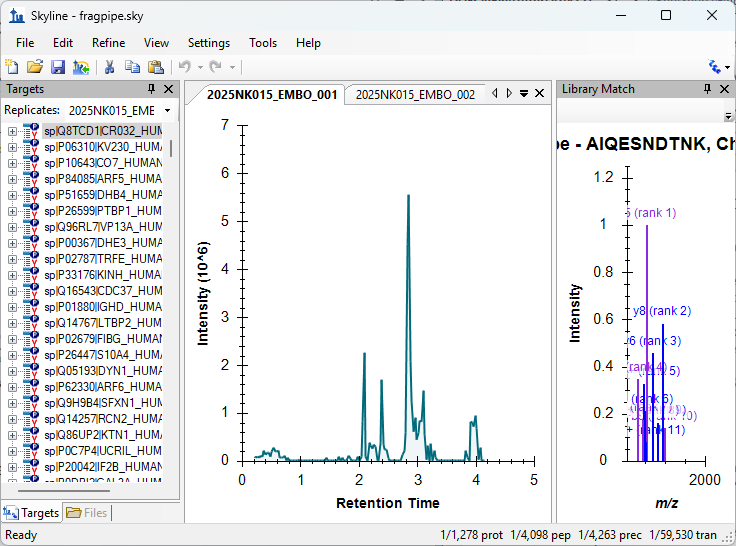
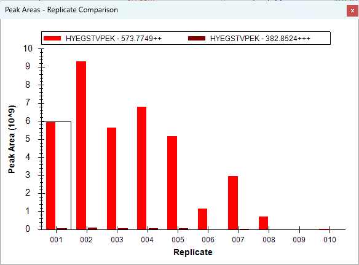
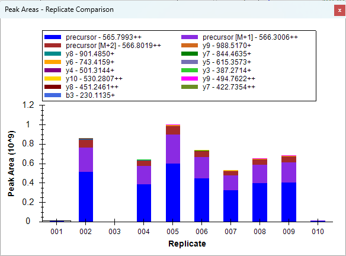

In this tutorial you will inspect the results of an untargeted, spectrum-centric analysis of a data independent acquisition (DIA) dataset. The samples come from a study comparing the plasma proteomes of older and younger healthy individuals: pooled plasma from five old and five young participants, digested with the ENRICH-iST kit, and analyzed on an Orbitrap Astral with 2-Da isolation windows over 380 to 980 m/z.
The search itself is performed outside Skyline, in FragPipe: MSFragger identifies multiple peptides in each chimeric spectrum, Percolator validates the identifications, and DIA-NN quantifies the peptides. Since version 22.0, FragPipe can write a Skyline document as one of its outputs, and that is where this tutorial picks up. You will:
This tutorial covers only the Skyline portion of Skyline Webinar 26, “DIA with FragPipe, DIA-NN and Skyline”. The FragPipe and DIA-NN sections of the webinar, which produce the document you open here, are covered in the webinar materials.
To start this tutorial, download the following ZIP file:
https://skyline.ms/webinars/Webinar26_data/Webinar26.zip
Note that this file is large (about 4 GB), because it contains the ten Astral DIA runs. Extract the files to a folder on your computer, like:
C:\Users\brendanx\Documents
This will create a new folder:
C:\Users\brendanx\Documents\Webinar26
Since this tutorial covers a proteomics topic, ensure that the user interface is set to the “Proteomics interface”. Click the user interface button in the upper right-hand corner of the Skyline toolbar and select Proteomics interface which looks like this:
Skyline is operating in proteomics mode, which is displayed by the protein icon in the upper right-hand corner of Skyline.
FragPipe wrote a Skyline document holding everything its spectrum-centric search found, along with the chromatograms it extracted from the raw data. Open it now.
The document is large, so it may take a little while to load. When it is done, the Skyline window should look like this:

The Targets view on the left lists every protein and peptide the search identified, and the ten chromatogram graphs are the ten runs. You can re-arrange the panels into whatever layout you prefer by dragging them around.
Start with the peptide HYEGSTVPEK, from the protein sp|P00738|HPT_HUMAN (haptoglobin). To get to it quickly, use the Find command rather than scrolling the Targets view.
Skyline selects the peptide in the Targets view. Now look at how much of it was measured in each sample.
The peak areas should be the raw, unnormalized values. To be sure:
The graph should now look something like this:

Each bar is one of the ten samples. Consider what the graph is telling you: in which samples does this peptide have an associated identification? Where are the peak areas highest? Do the samples with the strongest signal agree with the statistical results FragPipe reported?
Not every peptide is as well behaved. Look at the peptide AASGTQNNVLR.
With the Peak Areas graph still showing the Replicate Comparison, you should see something like this:

Do you see anything strange? Look in particular at the samples 2025NK015_EMBO_001, 003 and 010. What has happened to this peptide there? Click through the individual precursors and look at their chromatograms in each run: how do the peaks look, and how many points are there across each peak?
Finally, take your time to browse other proteins and precursors. How are their peaks? Why were they identified?
In this tutorial you opened a Skyline document produced by a spectrum-centric FragPipe search of a DIA dataset, and used the Targets view, the Find command and the Peak Areas replicate comparison to inspect how individual peptides behaved across ten samples. Being able to see the extracted chromatograms behind an identification – and to spot the peptides where something has gone wrong – is what Skyline adds to an otherwise untargeted workflow.